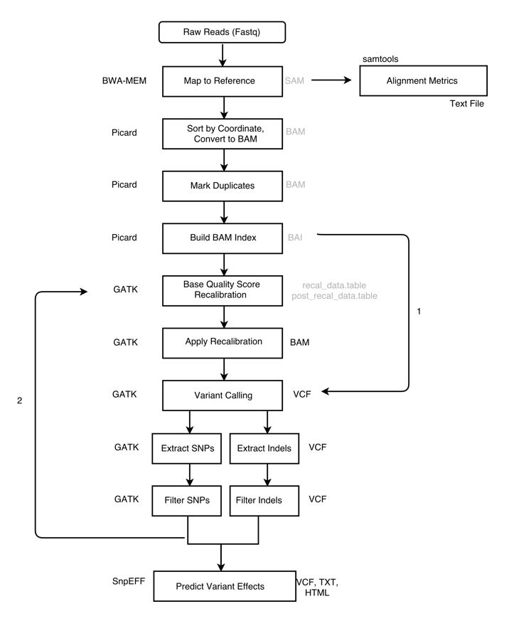
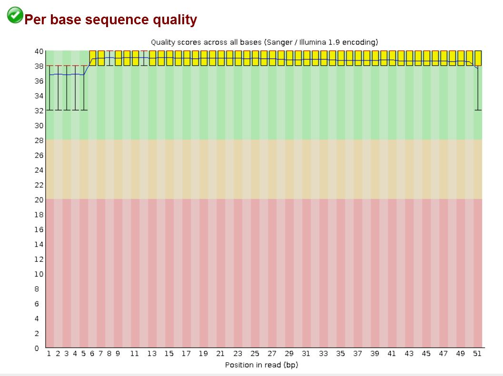
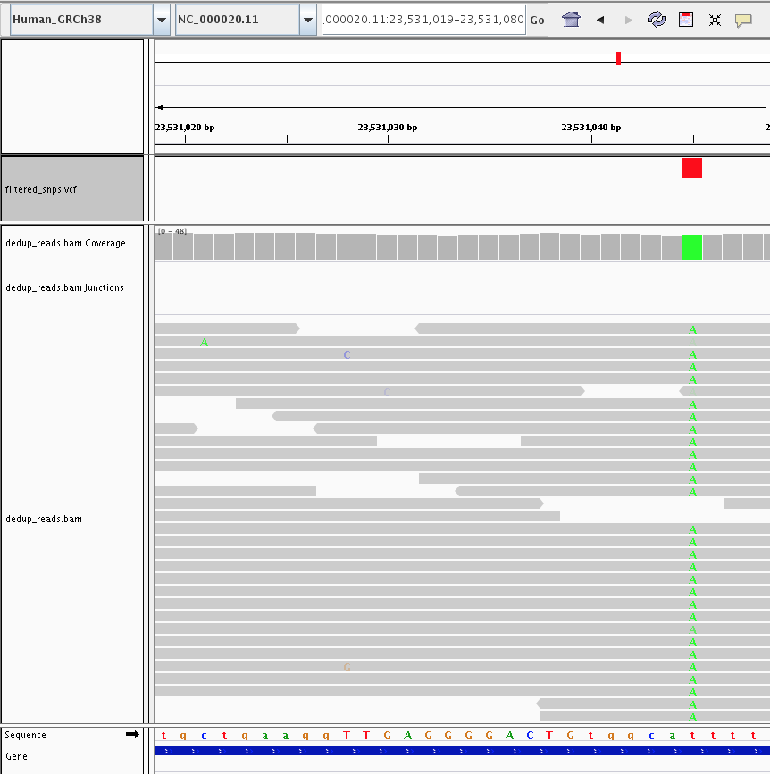
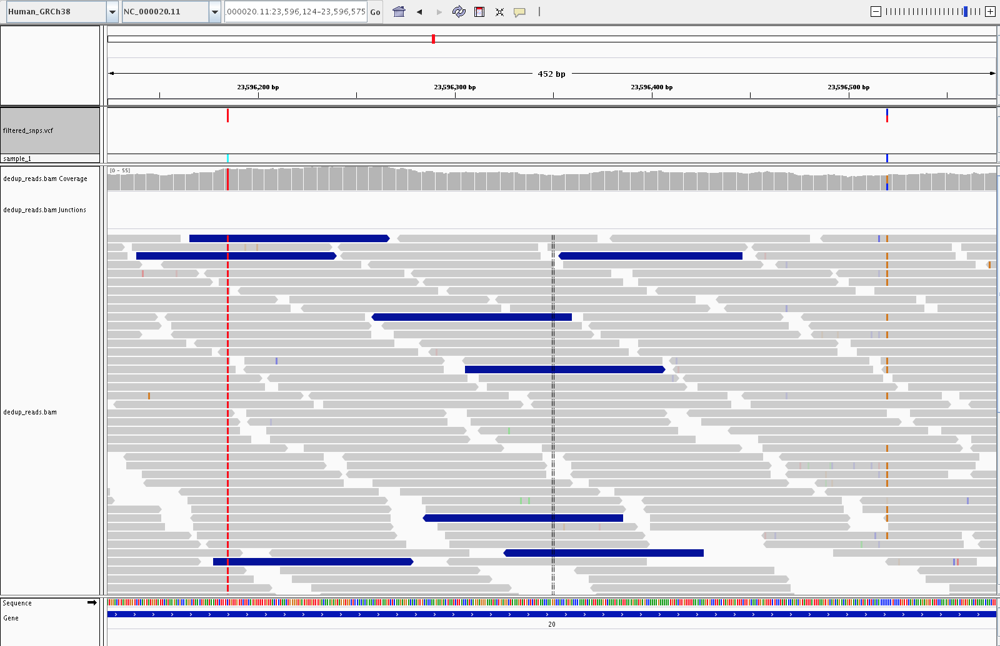
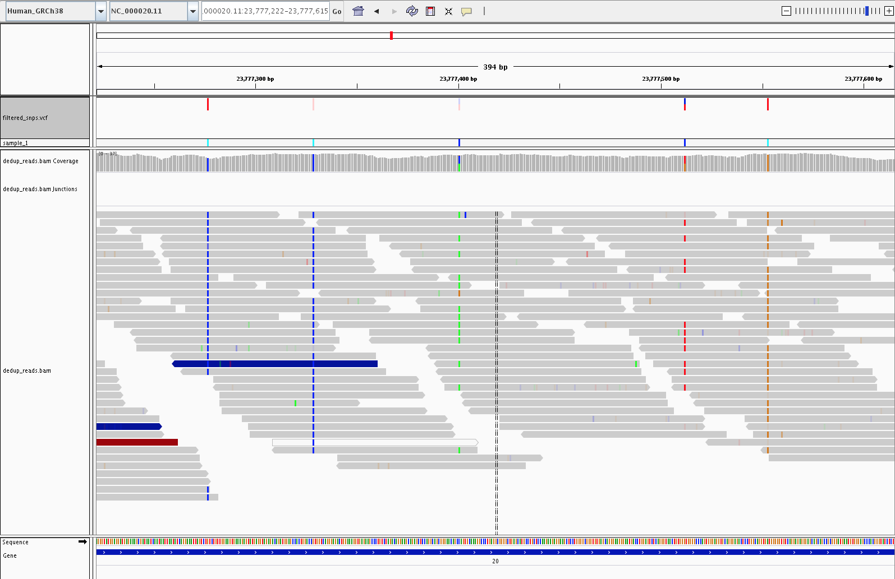
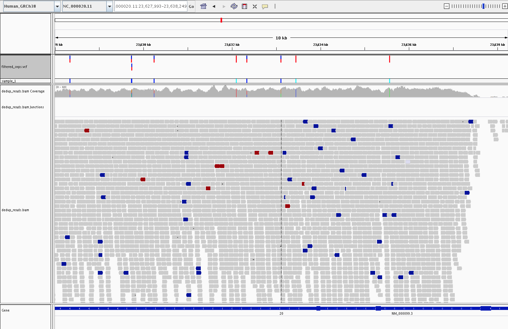

WGS
Germline short-variant calling (SNPs and small indels) from whole-genome sequencing of non-model organisms, run on locally installed HPC modules.
Because non-model organisms rarely have a trusted known-variants VCF (dbSNP, 1000 Genomes, etc.), this pipeline departs from the standard Broad Best Practices in two specific ways:
Bootstrapped BQSR. We generate our own “known-sites” VCF by first calling and hard-filtering variants on unrecalibrated reads, then feeding that filtered VCF into
BaseRecalibrator.Hard filtering instead of VQSR. VQSR requires a large, curated truth set that does not exist for most non-model species. We use GATK’s recommended hard-filter expressions for SNPs and indels separately.
Scope is limited to germline short variants in a single sample. This tutorial does not cover somatic calling, structural variants, or joint genotyping across cohorts.
Pipeline overview
{kind=link}

The pipeline, with two alternative paths marked. Arrow 1 shows an alternative path that skips BQSR entirely, going straight from the indexed BAM to variant calling. Arrow 2 is the bootstrap feedback loop: filtered variants from the first-pass call are fed back in as the known-sites input for BQSR. Best practice is to run BQSR, and for non-model organisms (where no curated known-sites VCF exists) that means bootstrapping your own via arrow 2. This tutorial follows that path and runs the loop once (a single bootstrap pass).
Steps
Align reads with BWA-MEM.
Sort, mark duplicates.
Bootstrap a known-sites VCF: a first-pass
HaplotypeCallercall, split into SNPs and indels, hard-filtered, and kept only if PASS.BaseRecalibrator+ApplyBQSRusing the bootstrap VCF.Final variant calling with
HaplotypeCaller.Split, hard-filter, normalize, annotate, and QC the final call set.
Visualize the results in IGV to sanity-check the calls.
Environment
All commands assume the following modules are loaded. Exact names depend on your HPC installation. Substitute the versions available to you.
module purge
module load bwa/<version>
module load samtools/<version>
module load bcftools/<version>
module load gatk/4.x
module load htslib/<version> # for tabix
module load snpeff/<version>
Note
bwa-mem2 is a drop-in faster replacement for bwa mem and
produces identical alignments. If your HPC provides it, substitute
bwa-mem2 mem for bwa mem in the alignment step below.
Inputs
Before running the pipeline you need:
A reference genome FASTA (
reference.fa). This is the assembly your reads will be aligned to.Paired-end sequencing reads (
sample_1_R1.fastq.gzandsample_1_R2.fastq.gz): gzip-compressed FASTQ, read 1 and read 2 of each pair.A sample name, used in the BAM read-group
SMtag and as a prefix for derived filenames. We usesample_1throughout.
All other files in the pipeline are produced by the commands below.
Preprocessing
Index the reference
BWA, samtools, and GATK each need their own index or dictionary of the reference.
bwa index reference.fa
samtools faidx reference.fa
gatk CreateSequenceDictionary -R reference.fa
For references larger than 2 GB, use bwa index -a bwtsw reference.fa.
Align with BWA-MEM
The -R read-group string is required. HaplotypeCaller will refuse
to run without it. -M marks shorter split hits as secondary, which
GATK expects.
bwa mem -M \
-R '@RG\tID:sample_1\tLB:sample_1\tPL:ILLUMINA\tSM:sample_1' \
reference.fa \
sample_1_R1.fastq.gz sample_1_R2.fastq.gz \
> aligned_reads.sam
Sort and convert to BAM
gatk SortSam \
-I aligned_reads.sam \
-O sorted_reads.bam \
-SO coordinate
Sanity-check the alignment with samtools flagstat:
samtools flagstat sorted_reads.bam > alignment_metrics.txt
Things to look for in the report:
Total reads should roughly match the expected count (reads-in-FASTQ multiplied by 2 for paired-end).
Mapped %: typically above 95% for a matched reference and a healthy library. Substantially lower can indicate the wrong reference, heavy contamination, or severe quality issues.
Properly paired %: aim for above 90%. Very low values point to library-prep problems or an assembly that is fragmented relative to the insert size.
Singletons %: reads whose mate did not map. Should be low (low single-digit %).
Mark duplicates
The same DNA fragment can be sequenced multiple times: PCR duplicates during library prep, or optical duplicates from the instrument mis-reading one cluster as several. Duplicates are not independent evidence of a variant, so they must be identified and excluded from downstream variant calling.
MarkDuplicates does not remove duplicates; it flags them, so
downstream GATK tools can skip them by default.
gatk MarkDuplicates \
-I sorted_reads.bam \
-O dedup_reads.bam \
-M dedup_metrics.txt
samtools index dedup_reads.bam
Warning
Do not mark duplicates for amplicon or other library types where reads are expected to start and end at the same positions by design.
Inspecting the duplicate flag
The second column of every SAM/BAM record is the bitwise flag, a
small integer that packs multiple boolean properties about the read
into a single number. To see the raw records, use samtools view:
samtools view dedup_reads.bam | head -1
A SAM record has 11 required tab-separated columns followed by optional tags. Broken out, a typical record looks like this:
Column Field Example value
------ ------ ---------------------------------------------
1 QNAME HWI-ST123:42:ABCDE:1:1101:1234:5678
2 FLAG 99
3 RNAME chr1
4 POS 10145
5 MAPQ 60
6 CIGAR 100M
7 RNEXT =
8 PNEXT 10245
9 TLEN 200
10 SEQ ACGTACGT...
11 QUAL IIIIIIII...
tags ... NM:i:0 RG:Z:sample_1 ...
The 99 in column 2 is the bitwise flag for that read.
MarkDuplicates sets bit 0x400 (decimal 1024) on any record
it identifies as a duplicate. Every other bit is left as it was. A
properly-paired forward read that gets marked as a duplicate will go
from flag 99 to flag 1123 (that is, 99 + 1024).
Two ways to decode a flag value into its component bits:
The Broad Institute hosts a web-based flag decoder: paste a flag number into the form and the page shows you which bits are set.
Run
samtools flags <value>on the command line:
samtools flags 1123
# 0x463 1123 PAIRED,PROPER_PAIR,MREVERSE,READ1,DUP
To see how many records carry each flag value in a BAM:
samtools view dedup_reads.bam | awk '{print $2}' | sort | uniq -c | sort -rn | head
The dedup_metrics.txt file written by the command above summarizes
the duplication rate per library (PERCENT_DUPLICATION) and an
ESTIMATED_LIBRARY_SIZE, which is useful for spotting over-amplified
or under-diverse libraries.
Bootstrapped BQSR
Why base-quality recalibration
The sequencer emits a Phred-scaled base quality score (Q-score) for every base it calls. Q20 means a 1-in-100 probability that the base is wrong; Q30 means 1-in-1000. Variant callers use these scores to weigh evidence for and against a variant: a pile-up of high-Q alternate bases is a real signal, whereas the same pile-up at low quality is noise.
The problem is that the raw Q-scores coming out of the instrument are biased. Systematic sources (sequencing chemistry, position in the read, local sequence context such as the preceding dinucleotide, and lane or flowcell effects) mean a report of “Q30” is not really 1-in-1000 across the board. Base Quality Score Recalibration (BQSR) learns an empirical correction for these biases and overwrites the raw scores with recalibrated ones, so downstream variant-calling evidence is correctly weighted.
{kind=link}

Example FastQC per-position quality plot. The first few positions show wider spread and a lower mean quality, the middle of the read is stable at Q37 or above, and the final base drops back toward Q32. These position-dependent systematic patterns are exactly what BQSR learns to correct.
How BQSR works
BaseRecalibrator scans the BAM. At every aligned base it compares
the read base to the reference. At any position that appears in the
known-sites VCF, mismatches are treated as real variation and skipped.
At any other position, a mismatch is treated as a likely sequencing
error.
For each observed base, the tool records a set of properties, called covariates, that might explain systematic errors. A covariate is simply a property of the observation (something describing the base or the read it came from) that the tool can group by when measuring error rates. The standard covariates are:
Read group: which lane and library the read came from.
Reported Q-score: the quality the sequencer originally assigned.
Cycle position: how far into the read the base is (base 1, base 2, …, base N).
Sequence context: the current base and the base immediately preceding it (the dinucleotide, e.g.
ACvs.TG).
For every combination of these covariate values, BaseRecalibrator
counts how many bases were examined and how many mismatched the
reference. Those two numbers give an empirical error rate, which is
compared to the reported Q-score. The difference produces a correction.
For example: “in lane 3, at cycle 90, in an AC dinucleotide context,
bases reported as Q30 actually mismatch at a rate closer to Q24, so
subtract 6 from the score”. The table of all such corrections is the
recalibration report.
ApplyBQSR then walks the BAM and replaces the original per-base
Q-scores with the corrected values from the table.
Why we bootstrap for non-model organisms
BQSR requires a known-sites VCF to mask real variants during error estimation. For humans and a handful of other model organisms, curated sets like dbSNP or the 1000 Genomes panel are the standard input. For a non-model organism, no such resource exists.
The bootstrap solves this: call variants once on the uncalibrated BAM, hard-filter aggressively to get a high-confidence set, and use that as the known-sites input for BQSR. This tutorial runs a single bootstrap pass. For some species or deeper studies you may want to iterate (re-call on the recalibrated BAM, re-filter, re-recalibrate) until the BQSR report stabilises.
Step 1 - first-pass variant calling
The bootstrap call is throw-away. We only need candidate sites to mask during recalibration, so a plain VCF output is fine here (no need for GVCF mode, introduced below in the final variant-calling step).
gatk HaplotypeCaller \
-R reference.fa \
-I dedup_reads.bam \
-O bootstrap_variants.vcf
Step 2 - split and hard-filter
Split into SNPs and indels; each class has its own filter thresholds.
gatk SelectVariants \
-R reference.fa \
-V bootstrap_variants.vcf \
--select-type-to-include SNP \
-O bootstrap_snps.vcf
gatk SelectVariants \
-R reference.fa \
-V bootstrap_variants.vcf \
--select-type-to-include INDEL \
-O bootstrap_indels.vcf
Apply hard filters. VariantFiltration marks failing variants but
keeps them in the VCF; we drop them in the next command.
gatk VariantFiltration \
-R reference.fa \
-V bootstrap_snps.vcf \
--filter-expression "QD < 2.0" --filter-name "QD2" \
--filter-expression "FS > 60.0" --filter-name "FS60" \
--filter-expression "MQ < 40.0" --filter-name "MQ40" \
--filter-expression "MQRankSum < -12.5" --filter-name "MQRankSum-12.5" \
--filter-expression "ReadPosRankSum < -8.0" --filter-name "ReadPosRankSum-8" \
--filter-expression "SOR > 3.0" --filter-name "SOR3" \
-O bootstrap_snps.filtered.vcf
gatk VariantFiltration \
-R reference.fa \
-V bootstrap_indels.vcf \
--filter-expression "QD < 2.0" --filter-name "QD2" \
--filter-expression "FS > 200.0" --filter-name "FS200" \
--filter-expression "ReadPosRankSum < -20.0" --filter-name "ReadPosRankSum-20" \
--filter-expression "SOR > 10.0" --filter-name "SOR10" \
-O bootstrap_indels.filtered.vcf
Keep only PASS variants and merge into a single known-sites VCF:
gatk SelectVariants -R reference.fa -V bootstrap_snps.filtered.vcf \
--exclude-filtered -O bootstrap_snps.pass.vcf
gatk SelectVariants -R reference.fa -V bootstrap_indels.filtered.vcf \
--exclude-filtered -O bootstrap_indels.pass.vcf
gatk MergeVcfs \
-I bootstrap_snps.pass.vcf \
-I bootstrap_indels.pass.vcf \
-O bootstrap_known_sites.vcf
tabix -p vcf bootstrap_known_sites.vcf
Step 3 - recalibrate
gatk BaseRecalibrator \
-R reference.fa \
-I dedup_reads.bam \
--known-sites bootstrap_known_sites.vcf \
-O recal_data.table
gatk ApplyBQSR \
-R reference.fa \
-I dedup_reads.bam \
--bqsr-recal-file recal_data.table \
-O recal_reads.bam
Note
BaseRecalibrator in GATK4 no longer computes Per-Base Alignment
Quality (BAQ) by default. If you want it, add --enable-baq.
Leaving it off is the current recommendation and is faster.
Variant calling
HaplotypeCaller identifies candidate variant sites, locally
reassembles the reads overlapping each active region, and emits
genotype calls (SNPs and indels together) with confidence scores.
Choosing an output mode
HaplotypeCaller can write its output in two forms.
Standard VCF mode (the default) emits one record per variant site directly into a VCF file. It is the simplest path and is a reasonable choice when you have a single sample and no plans to ever combine this callset with others.
GVCF mode (-ERC GVCF) emits a genomic VCF
(sample_1.g.vcf.gz). A GVCF records reference confidence at every
position in the genome, with long reference-matching stretches
compressed into reference blocks. A second tool, GenotypeGVCFs,
reads that GVCF and produces the final VCF. For a single sample the
final content is equivalent to standard mode.
GVCF mode is the current Broad Best Practices recommendation and it
future-proofs the pipeline: if more samples arrive later, you can
feed all their GVCFs into GenotypeGVCFs (or first consolidate
them with GenomicsDBImport) to joint-genotype the cohort, without
re-running HaplotypeCaller from the BAMs. For one-shot
single-sample analyses where none of that applies, standard mode is
simpler and equally correct.
Both paths below produce raw_variants.vcf, the input to the
hard-filter step.
Standard mode:
gatk HaplotypeCaller \
-R reference.fa \
-I recal_reads.bam \
-O raw_variants.vcf
GVCF mode:
gatk HaplotypeCaller \
-R reference.fa \
-I recal_reads.bam \
-ERC GVCF \
-O sample_1.g.vcf.gz
gatk GenotypeGVCFs \
-R reference.fa \
-V sample_1.g.vcf.gz \
-O raw_variants.vcf
HaplotypeCaller is deliberately permissive at this stage: the aim
is to maximise sensitivity. False positives are removed by the
hard-filter step below.
Hard filtering
Same split-then-filter pattern as the bootstrap, applied to the final call set.
gatk SelectVariants -R reference.fa -V raw_variants.vcf \
--select-type-to-include SNP -O raw_snps.vcf
gatk SelectVariants -R reference.fa -V raw_variants.vcf \
--select-type-to-include INDEL -O raw_indels.vcf
SNP filters:
gatk VariantFiltration \
-R reference.fa \
-V raw_snps.vcf \
--filter-expression "QD < 2.0" --filter-name "QD2" \
--filter-expression "FS > 60.0" --filter-name "FS60" \
--filter-expression "MQ < 40.0" --filter-name "MQ40" \
--filter-expression "MQRankSum < -12.5" --filter-name "MQRankSum-12.5" \
--filter-expression "ReadPosRankSum < -8.0" --filter-name "ReadPosRankSum-8" \
--filter-expression "SOR > 3.0" --filter-name "SOR3" \
-O filtered_snps.vcf
Indel filters:
gatk VariantFiltration \
-R reference.fa \
-V raw_indels.vcf \
--filter-expression "QD < 2.0" --filter-name "QD2" \
--filter-expression "FS > 200.0" --filter-name "FS200" \
--filter-expression "ReadPosRankSum < -20.0" --filter-name "ReadPosRankSum-20" \
--filter-expression "SOR > 10.0" --filter-name "SOR10" \
-O filtered_indels.vcf
These thresholds are the current GATK-recommended defaults for germline hard filtering. Upstream reference: Hard-filtering germline short variants.
Annotation
A filtered VCF tells you where the variants are; annotation tells you what they do: which gene and transcript each variant falls in, whether it changes an amino acid, whether it disrupts a splice site, whether it is intergenic, and so on. We use snpEff, a command-line effect predictor that:
Reads a pre-built genome annotation database (gene, transcript, and exon structure) matched to your reference assembly.
For every variant in the input VCF, looks up overlapping features and predicts the functional consequence (e.g.
missense_variant,synonymous_variant,frameshift_variant,splice_donor_variant,intergenic_region).Writes an annotated VCF with the predictions in a structured
ANNINFO field, plus a summary HTML report and a per-gene table.
snpEff is particularly well-suited to non-model organism work: pre-built databases exist for over 20,000 reference genomes, and when no pre-built database is available you can build your own from a GFF/GTF and the reference FASTA.
Normalize before annotating
Annotators can assign different consequences to what is effectively the same variant if it is represented differently in the VCF. Two differences matter in practice:
Multi-allelic records: a single VCF line can carry more than one alternate allele. Most annotators score the record as a whole; some rank the alts inconsistently. Splitting into one record per alt is safer.
Left-alignment of indels: an indel that can be written at several equivalent positions should be normalized to the leftmost representation so it matches the annotation database.
bcftools norm handles both in one pass:
bcftools norm -f reference.fa -m -both \
-O z -o filtered_snps.norm.vcf.gz filtered_snps.vcf
tabix -p vcf filtered_snps.norm.vcf.gz
bcftools norm -f reference.fa -m -both \
-O z -o filtered_indels.norm.vcf.gz filtered_indels.vcf
tabix -p vcf filtered_indels.norm.vcf.gz
Find and download a database
snpEff databases | grep -i <your_organism>
snpEff download <database_name>
Annotate
snpEff -v <database_name> filtered_snps.norm.vcf.gz > filtered_snps.ann.vcf
Output files
snpEff writes three files into the working directory:
filtered_snps.ann.vcf: the annotated VCF. Each variant carries anANNINFO field listing predicted effects, affected gene and transcript, impact category (HIGH, MODERATE, LOW, MODIFIER), and HGVS nomenclature.snpEff_genes.txt: tab-delimited per-gene summary of how many variants of each consequence class fall in each gene.snpEff_summary.html: HTML report with distributional plots (effects by class, by region, by impact) and dataset-level QC.
Chromosome naming mismatches
snpEff will silently annotate zero variants if chromosome names in your
VCF do not match those in the snpEff database. A typical mismatch is
RefSeq-style NC_000020.11 in your VCF vs. plain 20 in the
database. Rename chromosomes before annotation:
# Build a two-column rename map: <source_name> <target_name>
echo -e "NC_000020.11\t20" > chrom_rename.txt
bcftools annotate --rename-chrs chrom_rename.txt \
-O z -o filtered_snps.renamed.vcf.gz filtered_snps.norm.vcf.gz
tabix -p vcf filtered_snps.renamed.vcf.gz
Use filtered_snps.renamed.vcf.gz as the snpEff input.
Alternatives
Ensembl VEP is the other widely used effect predictor. It excels for human clinical annotation (ClinVar, gnomAD frequencies) but has fewer pre-built non-model genomes and a heavier setup, so snpEff is usually the better default for non-model organism work.
Post-filter QC
Quick summary statistics on the final, annotated call set (Ts/Tv ratio, singleton count, per-chromosome counts, depth distribution) are useful for sanity-checking.
bcftools stats filtered_snps.ann.vcf > filtered_snps.stats.txt
For a plotted report:
plot-vcfstats -p plots/ filtered_snps.stats.txt
Visualization in IGV
Loading the BAM and final VCF in IGV is the fastest sanity check: you can see whether each called variant is supported by the underlying reads.
Note
The screenshots below are from a human GRCh38 chr20 example, but the interpretation is the same for any organism. Only the track headers change.
Called vs. uncalled SNPs
A called SNP has a clear, consistent alternate allele across a majority of overlapping reads at that position. Sporadic mismatches that do not cluster into a coherent signal are (correctly) not called.
{kind=link}

A called SNP (green column in the coverage track, red tick in the VCF track) supported by consistent alternate-allele reads, next to positions with sporadic mismatches that the caller correctly ignored.
Homozygous vs. heterozygous SNPs
A homozygous alternate allele shows nearly 100% alternate reads; a heterozygous call shows roughly 50% reference and 50% alternate.
{kind=link}

Homozygous alternate on the left (nearly all reads carry the alternate base) and heterozygous on the right (about half reference, half alternate).
PASS vs. filtered variants
Variants that failed hard filtering remain in the VCF but are marked
with the filter name(s) they tripped. IGV renders them as lighter,
translucent ticks in the VCF track, so at a glance you can see which
calls passed and which did not. The pile-up alone does not always
explain the failure: hard-filter decisions are based on annotation
values such as QD, FS, MQ, and SOR in the VCF INFO field rather
than on anything directly visible in the reads. For a specific
filtered variant, read the FILTER column of its VCF record to see
which threshold(s) it tripped.
{kind=link}

Five SNPs in the VCF track: three solid dark-red ticks are PASS calls, and two lighter translucent ticks are variants that failed hard filtering.
SNPs in the cystatin C gene (CST3)
The example below shows the final, hard-filtered SNP calls across the
cystatin C gene (CST3). Variants in CST3 have been associated
with Alzheimer’s disease.
{kind=link}

Eight SNPs called along the CST3 gene, viewed over a ~10 kb
window. The filtered_snps.vcf track at the top shows the
individual SNP calls, and the gene track at the bottom
(NM_000099.3) marks the CST3 transcript.
Notes for non-model organisms
When to iterate BQSR. A single bootstrap pass is sufficient for many use cases. If you want to check convergence, re-run
HaplotypeCalleronrecal_reads.bam, re-filter, and compare the resulting known-sites VCF to the previous one. Re-recalibrate only if the difference is non-trivial.No known-sites VCF at all? Running
BaseRecalibratorwithout--known-sitesis not supported. The bootstrap step is mandatory if you want BQSR for a non-model organism.No rsIDs. The annotated VCF will not carry dbSNP identifiers; functional predictions from snpEff are the primary annotation.
Custom snpEff database. If no pre-built database exists for your organism, you can build one from a GFF/GTF and a reference FASTA. See the snpEff database-building guide.